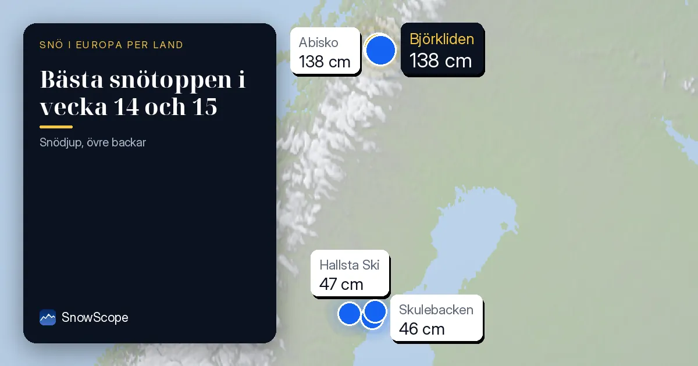

Björkliden leder Sverige med 138 cm: bästa snötoppen i vecka 14 och 15
Björkliden håller topplaceringen i Sverige med 138 cm snö, långt före de andra mätta skidorterna. Början av april och mitten av april är när snödjupet når sitt säsongstoppar på svenska backar, så förhållandena nu bygger mot vinterns bästa månad.
Se snöprognosen för Björkliden live i SnowScope-appenSnödjup, pudervarningar och 3D-kartan, gratis.
Så ser djupet ut idag
Vår satellitdata och modeller visar Björkliden på 138 cm, lika med Abisko i den fjärran norden. Klyftan växer snabbt under dem: Hallsta Ski håller 47 cm, Skulebacken 46 cm och Bjästabacken 43 cm. Alla 74 av Sveriges 75 skidorter har nu mätbar snötäckning, och 95 procent av den kartlagda bergregionen är vit.
Djupet varierar kraftigt efter höjd. Under 500 m är medelvärdet bara 15 cm och snön täcker 94 procent av området. Vid 500–1000 m mäter vi 16 cm över en helt täckt zon. Över 1000 m förändras bilden: 1000–1500 m i genomsnitt 42 cm, och 1500–2000 m håller 67 cm. Bergen lagrar tre gånger mer snö än de låga fotterna.
Under den senaste veckan har nordens skidorter behållit sitt försprång stabilt. Björkliden och Abisko fick bara 2 cm på tre dagar var, ett tecken på att det tyngsta snöfallet kom tidigare i veckan. Centralsvenskas lägre skidorter såg däremot mycket färskare snöfall: Bjästabacken fick 25 cm på 72 timmar, Skulebacken 20 cm och Hallsta Ski 15 cm. De våta Atlantlågtrycken matar nu mitten av landets backar.
| Resort | Today | Normal for the date | Share of normal |
|---|---|---|---|
| Björkliden | 47 cm | 45 cm | 104 % |
| Abisko | 34 cm | 28 cm | 121 % |
| Hallsta Ski | 44 cm | 7 cm | 629 % |
| Skulebacken | 29 cm | 3 cm | 967 % |
| Bjästabacken | 33 cm | 3 cm | 1100 % |

När snön toppar—och varför det spelar roll nu
Björkliden historiska data visar vecka 14, 15 och 16 som de snörikaste—alltså början av april, mitten av april och slutet av april. Vi vet detta från årtionden av tidigare vintrar. Rätt nu, 21 november, håller Björkliden 47 cm snö på mäthöjden 678 m; långtidsmedianen för detta datum är 45 cm. Skidorten ligger 4 procent över normalt, så säsongen har startat enligt spår.
De fem skidorterna vi följer visar en delad bild. Abisko ligger 21 procent över sitt vanliga novembertjup. Men lägre platser är exceptionella: Hallsta Ski sitter på 44 cm när november normalt ser 7 cm—det är 629 procent över normalt. Skulebacken och Bjästabacken är ännu mer extrema, på 967 respektive 1100 procent av sitt vanliga novembertjup. Tidig säsongssnö i låglandet är tunn och fläckig ett normalt år; i år har tidig höstolycka fyllt dem väl.

Bästa förhållandena framåt
November till mars är uppbyggnadsmånader. Den djupaste, mest stabila snön kommer från januari och framåt och toppar i april. För skidåkare som planerar framåt är mitten av april (vecka 14–15) historiskt när Björkliden erbjuder sin bästa kombination av djup och tillförlitlighet. Rätt nu är vi i uppfarten: goda förhållanden finns, men underlaget kommer att tjockna och bli jämnt under kommande veckor.
I andra veckan av december (8–14 december) förutspår vår modell upp till 13 cm nysnö över regionen. Det driver säsongen framåt. Utsikten för slutet av november och början av december är milder: 11 cm snöfall förväntas med den snörikaste dagen på 22 november.
Vad förra veckan visar
Snötäckningen växte med 37 560 km² på sju dagar—ett hopp från 274 120 km² till 311 680 km² idag. Det är 14 procent tillväxt i vitmarkerad yta, driven av följden av Atlantlågtryck som svept över landet. Gårdagens lilla förlust på 260 km² speglar en marginell smältning under de varmaste timmarna; trenden är fortfarande uppåt.
Björkliden har hållit första plats fyra av de senaste sex dagarna. Den 16 och 17 november ledde Abisko på 129–130 cm, men färsk snö på högre mark drev Björkliden framåt den 18 och 19 november. De norra bergen tar emot det mest organiserade snöfallet, medan Centralsvenskas blygsamma höjder fångar avrinningsfukten och får djup från samma stormar.
Höjd och snöstabilitet
Höjdbanden avslöjar bergstrukturen. Övergången vid 1000 m är markerad: under det har snön i genomsnitt 16 cm över låghöjdbältet; över det fördubblas och tredubblas djupet. Vid det högsta bandet, 1500–2000 m, mäter vi 67 cm—nog för en solid tidigvintersöl. Det är här skidpatrullen arbetar; det är här stenar och träd förblir begravda.
Alla zoner över 500 m bär 100 procent snötäckning. Bara det lägsta bandet, 0–500 m, visar 94 procent täckning—sex av hundra hektar ser fortfarande bara mark. Det är de marginella fotterna där tidig säsong alltid är ett spel. För skidåkare är budskapet klart: gå högt och du hittar konsekvent snö; gå lågt och kontrollera förhållandena först.
Blick norrut och framåt
Norges ledare, Riksgränsen, står på 167 cm—29 cm djupare än Björkliden. Den klyftan speglar Norges högre toppar och tidigare vinter. Finlands högsta backe, Pyhä, sitter på 30 cm. Sverige ligger mellan: bra snö i höjd i norden, exceptionell tidigsäsongsdjup i mitten av låglandet.
Kommande vecka lägger till stegvis. Stormen den 22 november ger 6 cm och sätter nysnöprislappen; följande dagar lugnar av. Senast 24 november är nästa 3-dagarsprognos för Björkliden förutspådd till 4 cm. Det är en stadigt tillväxt, inte ett duschtag. Det passar november: även tunn snö på ett solidt underlag växer in i stabilt täcke väl den väl bond. Kolla den officiella lavinprognosen innan någon off-piste-verkstad; tidigsäsongssnö kan vara instabil på brant mark trots att den ser solid ut ovanifrån.
Tips för skidåkare
- Högland (1000 m och högre) håller 42–67 cm och erbjuder den mest tillförlitliga skidåkningen. Låga fötter under 500 m i genomsnitt 15 cm—räkna med stenar och tunna fläckar. Planera rutter därefter.
- Björkliden och Abisko leder landet med 138 cm var. Båda är värda resan norrut om du söker etablerad söl och djup. Centrala backar som Hallsta Ski erbjuder färsk puder (47 cm på 72 timmar) men bygger från tunnare grund.
- Början av april och mitten av april (vecka 14–15) är historiskt snörikasterna månaderna. Bygg din novemberskidåkning in i en vinterplan snarare än att jaga detta ögonblick som säsongens bästa.
- Innan du åker off-piste någonstans, kolla den officiella lavinprognosen. Tidigsäsongssnö kan bindas dåligt till gammalt underlag och glida på branta backar trots att den ser stabil ut.
- Nästa betydande snöfall kommer omkring 22 november (upp till 6 cm). Efter det saktar ackumuleringen ned. Om du planerar en resa under de nästa två veckorna, förvänta dig inte plötslig djupökning—förvänta dig solitt underhål av vad som är här.
Om siffrorna
Snödjupen för skidorterna är det djupaste snötäcket på ortens övre backar enligt SnowScopes snömodell (cirka 1 km, körning från 21 november); de är uppskattningar för ett område, inte en mätning på en punkt. Stationsvärden är mätningar på det angivna datumet. Prognoser kan ändras. Läs alltid den officiella lavinprognosen innan du åker offpist.
Citera den här rapporten
För forskning, undervisning eller press: siffrorna och diagrammen får återanvändas fritt under CC BY 4.0 med den här källhänvisningen.
SnowScope (2026), Björkliden leder Sverige med 138 cm: bästa snötoppen i vecka 14 och 15, https://snowscope.app/blog/sv/2026/11/sweden-when-to-book-ski-trip-21-november-2026.html, hämtad 2026-11-21
SnowScope (Atlas Labs). (2026, November 21). Björkliden leder Sverige med 138 cm: bästa snötoppen i vecka 14 och 15. SnowScope snow reports. https://snowscope.app/blog/sv/2026/11/sweden-when-to-book-ski-trip-21-november-2026.html
BibTeX
@misc{snowscope2026swedenwhentobookskitrip2,
author = {{SnowScope (Atlas Labs)}},
title = {Björkliden leder Sverige med 138 cm: bästa snötoppen i vecka 14 och 15},
year = {2026},
month = nov,
howpublished = {\url{https://snowscope.app/blog/sv/2026/11/sweden-when-to-book-ski-trip-21-november-2026.html}},
note = {Published 2026-11-21 12:46 UTC; accessed 2026-11-21}
}· CC BY 4.0 · Metoder, data och verktyg →
Björkliden: snö och temperatur efter höjd, i vinter jämfört med förra (verktyg) →
Följ Björkliden
Gratis: ett meddelande när nysnö är på väg, och prognosen varje morgon.